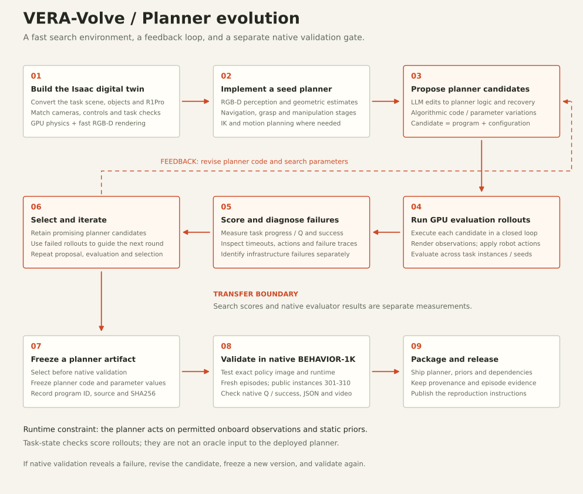

Evolve the program.
Ground it in execution.
Our focus is the planner: an executable program that turns onboard observations into navigation, grasping and manipulation actions. We improve its logic and parameters by repeatedly running it, measuring its behavior and proposing a new version.
We build an Isaac digital twin of the task environment so candidate planners can be evaluated with GPU simulation and fast RGB-D rendering. The search combines LLM-generated code changes with algorithmic variation of planner code and parameters. Task progress, success and failure traces guide the next round.
The selected program then crosses a separate validation gate: the native BEHAVIOR-1K evaluator. A strong search score helps choose a candidate; the final claim comes from native episodes and their JSON/video artifacts.
From an Isaac twin
to a validated planner.


Build the digital twin and a seed planner
Recreate the task scene, objects and R1Pro in Isaac, with the camera, control and task-check interfaces needed for evaluation. GPU physics and RGB-D rendering make this the search environment for candidate execution. This is a simulator port: native transfer is checked separately, and we do not claim an exact physics match or a measured rendering speedup here.
The seed is an observation-driven geometric planner: detect objects from RGB-D, estimate useful geometry, choose a base stance, and execute task stages such as approaching, grasping, transporting and placing. IK and motion-planning routines supply feasible robot motions where required.
Search over planner logic and parameters
LLM proposals change executable planner logic and recovery behavior. Algorithmic search supplies code or parameter variations. The mutable program can therefore change both what to do next and numerical decisions such as perception thresholds, offsets, gains and stage timeouts.
Each candidate runs in a closed loop in the twin. Score task progress/Q and success, inspect failure traces and infrastructure errors, retain promising programs, and use the observations to propose another round. The release includes selected evolved programs and their provenance; the complete search runner and archive are outside this snapshot.
Example: planner parameters evolved separately from logic ↗Freeze, transfer and validate natively
Freeze the chosen planner code and parameters, record its program ID and source hash, and package its dependencies and static priors. Test that exact policy image against native BEHAVIOR-1K, using a fresh episode process, the permitted observation wrapper, default horizons and one rollout per public instance.
Transfer can expose perception, contact, dynamics or packaging failures that the twin did not reveal. Revise the planner, freeze a new version and validate again when needed. Keep the search measurement and native measurement separate; retain the complete native task set rather than selecting the best repeated episode.
Deploy the selected planner as ordinary code
At runtime, a fixed task route loads the packaged planner. The planner repeatedly consumes permitted onboard observations and static priors and returns a 23D R1Pro action. Simulator task-state checks may score a development rollout; they are not an oracle input to the deployed planner.
The shared server provides resets, backend isolation and action validation. These are deployment details around the program produced by the search, rather than a replacement for the planner itself.
Inspect the released planner implementations ↗From observations
to household actions.
Original native-evaluator recordings from the team's public submission. Each clip is linked to its unedited episode JSON. The task-level results below cover ten instances; a single video illustrates one episode.
Turning on radio
8 / 10 successes · mean Q 0.800Planner results,
with the transfer gap visible.
The explorer opens on the ten current planner routes. Each published task has ten native episodes: instances 301–310, rollout 0. Mean final Q measures partial completion; success is the evaluator's explicit success field. Switch to the full submission only when you need the wider release inventory.
Loading the evidence snapshot…
| Task | Release route | Success | Mean Q | Evidence |
|---|
Source: VERA-VLA/b1k_final_submission @ a7e21a8. JSON hashes and video file references ↗
Run a planner.
Inspect every decision.
Start with a single planner route: the task-scoped launcher builds its runtime and evaluates it without downloading any VLA checkpoint. The native simulator and its assets are installed separately.
B1K=/absolute/path/to/BEHAVIOR-1K \
B1K_PYTHON=/absolute/path/to/evaluator/python \
INDICES=0 RESULTS_DIR=results_smoke \
bash scripts/run_eval.sh turning_on_radioBuilds the task-scoped policy image and runs native instance 301. Requires Docker, compatible GPU access and BEHAVIOR-1K v3.9.3-post1. The wider submission also includes learned-policy routes; their setup remains in the reproduction guide.
Evaluator version, wrapper selection, replay and result checks
Optional learned-policy checkpoints and their verification scope
Architecture, public evidence and remaining limitations
Preserved implementations, priors, licenses and tests
A fast search loop.
A strict transfer gate.
The Isaac digital twin makes repeated planner execution practical, while LLM and algorithmic search explore changes at different levels. Program structure, perception thresholds, motion targets and recovery conditions can all affect the outcome of a long-horizon task.
The native evaluator is the transfer gate. For turning on radio, the recorded H100/Isaac Lab search result is 9/10 successes; the separate native RTX run is 8/10. For attaching a camera to a tripod, the corresponding records are 10/10 and 6/10. Search quality and native performance must therefore remain separately visible.
Reproducing the released planner means recovering its exact code, parameters, static priors and runtime. Reproducing the entire evolution experiment additionally needs the twin-conversion pipeline, search driver and full candidate history, which are not bundled in this release. The scheme describes the method; the repository preserves the selected executable artifacts.
The output of evolution is a planner you can read, run and validate in the native simulator.
Built on a shared research ecosystem
With BEHAVIOR-1K, the adapted Ilia Larchenko BEHAVIOR solution, OpenPI, cuRobo, and the VERA team's planners and classical controllers. Component licenses and model terms are preserved in the source release.
Acknowledgments and licenses ↗